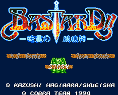

Bastard! - SNES Games
Bastard! Ankoku no Hakai-shin

Company:
Cobra Team
Date Released:
1994
Genre:
Fighting game
You fight in a 3D environment. You can move in any direction; your weapons are fireballs.
Anime Video Game Resource Center © 1998 by
Luis A. Cruz